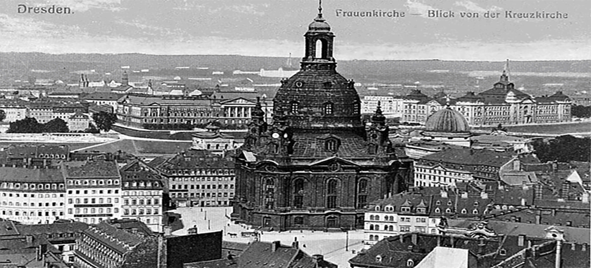
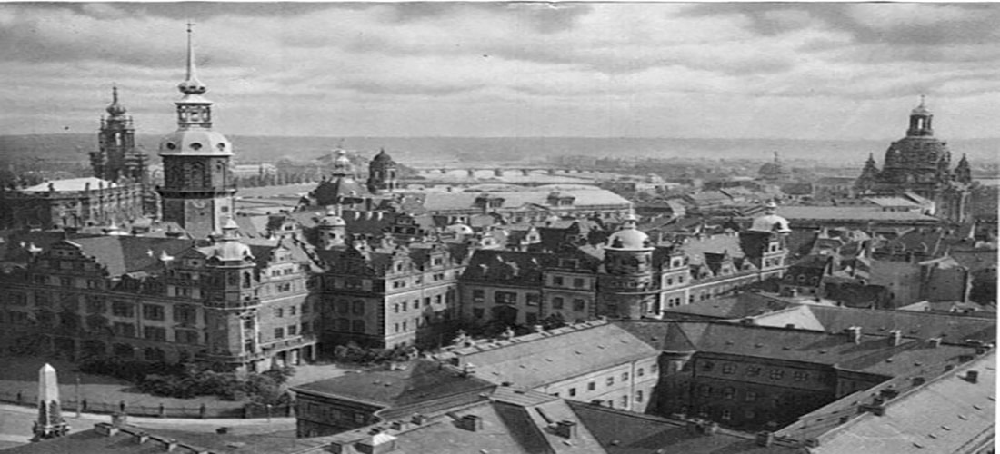
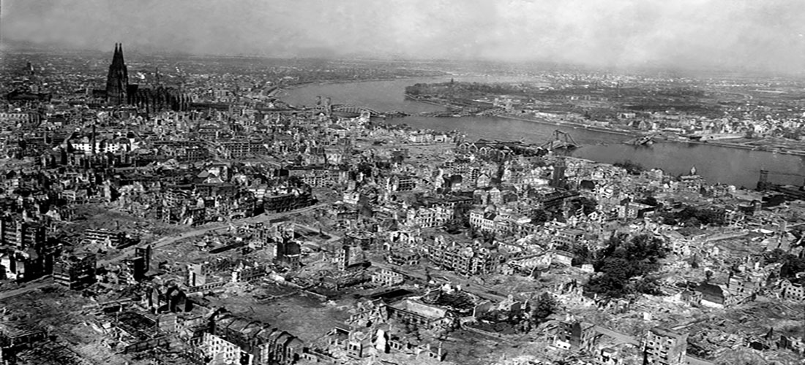

Dresden önce balıkçıların ve köylülerin barındığı bir köy idi. Şehir hakkında ilk belgesel kaynak 1206'da "Burg Thorn" adlı Orta Çağ başlarından kalan bir kalenin yıkılması hakkındaki bazı mahkeme protokol anlaşmalarıdır ve bu belgelerde İslav adıyla "Drežďany" olarak anılmıştır. Şehir olma beratı bulunmamakla beraber 1216 tarihli bir resmi belgede ismi şehir olarak anılmaktadır. "Meissen Kontu" Dietrich Dresden'i geçici bir ikametgah olarak kabul etmiştir. 1270'ten itibaren Dresden Meisen Kontluğunun başkenti olmuştur. Yaklaşık 1319'dan itibaren bu kontluk ve merkezi Dresden Wettin hanedanı idaresine geçmiştir. 1485'te Saksonya Düklüğü başkenti ve 1547'den itibaren Saksonya Elektörü'nün başkenti olmuştur. 1549'da Saksonya Elektörü "Moritz" Elbe Nehri'nin iki yakasında bulunan Dresden yerleşkeleri birleştirmiş ve bu yeni idare merkezine şehir olma beratı vermiştir.
Çok zayiat ve zarar veren bir Katolik-Protestant çatışması olan Otuz Yıl Savaşı (1618-1648) sırasında diğer birçok Alman şehri aksine kuşatma, talan ve yıkım tehlikelerini atlattı ama bu savaşla çok bağlantılı genel iktisadi buhran, büyük fakirlik ve veba gibi diğer salgınlar dolayısıyla hiç gelişemedi. Otuz Yıl Savaşı'ndan sonra Dresden'in gelişmesi çok değişen ve düzensiz olmuştur. Barış dönemlerinde şehirde çok güzel ve çok ihtişamlı binalar, sokaklar ve parklar kurulmuştur. Fakat Saksonya Elektörlüğü Avrupa'da zaman zaman çıkan bütün savaşlara katıldığı için şehir bu harp zamanlarında büyük zayiat ve hasar görmüştür.

1745 yılında Prusya'nın Silezya'yı ele geçirmesini sağlayan barış antlaşması, Saksonya'yı Avusturya ve Prusya arasında gelişmeye zorladı. Şehir 18. yüzyılda Zwinger Sarayının barok kısımları, Japon Sarayı ve Höfkirshe ile bezenmiştir. Saksonya Elektörü Güçlü I. Auguste şehrini "Kuzeyin Floransası yapmak hedefiyle başkent Dresden'e İtalya ve Avusturya'nın en iyi tanınmış mimarlar, besteciler ve müzisyenlerini davet etmiştir. Elektörler Dresden'de Avrupa'nın en geniş kapsamlı ve en değerli güzel sanatlar eserlerini 1560'ta I. August tarafından kurulan Dresden Milli Koleksiyonlarda toplamayı başarmışlardır. Avrupa da ilk porselen üretimi 1710'da Dresden'de geliştirilmiştir.Fakat Dresden zaman zaman savaşan ordular tarafından ve diğer afetlerle büyük hasara maruz bırakılmıştır. Bunlar arasında 1491 yangını, Yedi Yıl Savaşı (1756-1763) sırasında 1760'ta Prusyalılarca top tutulması, 1813'te I. Napolyon'un altıncı koalisyona karşı yaptığı Almanya kampanyasında Dresden Muharebesi, 1815´te Dresden'in şehir surları harabeye döndürülmesi 1849´da anayasa getirilmesi için ihtilal sayılabilir.
Dresden 1806 ile 1918 döneminde (1870'ten itibaren birleştirilmiş Almanya İmparatorluğu'nun bir eyaleti olarak) Saksonya Krallığı başkentliği yapmıştır. Şehrin 19. yüzyılda çok gelişmiş ve nüfusu 1849´da 95.000 iken 1900'da 396.000 olmuştur.

Şehir II. Dünya Savaşı'nın son günlerinde (13-14 Şubat) bombalanmıştır. Bütün savaş boyunca açık şehir olmasına ve bir tek saldırı almamasına rağmen savaşın sona ermesi ve Almanya'nın teslim olması ve bombalanan İngiliz şehirlerinin intikamı için müttefik devletlerin bir taktiği olarak saldırıya uğramıştır. Bombalanma sonucu Alman kaynaklarına göre 230.000 kişi ölmüştür, ama bu sayının o zamanki gündemi sarsmak için bilerek bir 0 fazladan yazılarak verildiği şu anda bilinmektedir. Son rakamlara göre ise ölü sayısı 20.000 ila 25.000 arasındadır. Ayrıca eski şehrin tamamı yıkılmıştır ve bir masal şehri olarak isimlendirilen Dresden harabeye dönmüştür. Bu konuyla ilgili özellikle duvarın yıkılması sonrasında yapılan birkaç adet film bulunmaktadır.